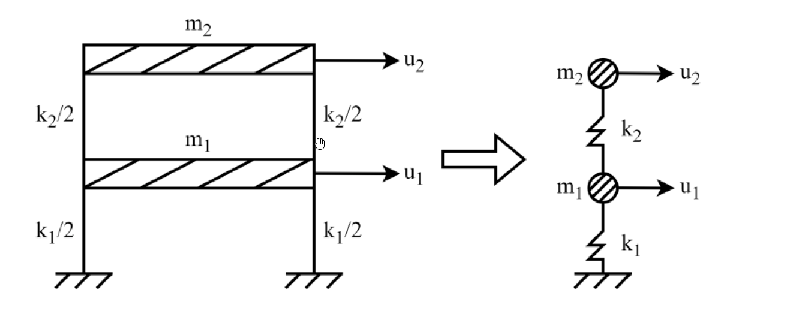

考題編號：SD-2025-2
主分類： SD-U1-3 單自由度、多自由度系統之動態分析及應用
副分類： SD-U1-1 結構動力基本性質及原理
分析方法： MDOF模態分析
標籤： MDOF 2自由度 特徵值問題 振態向量 自然頻率 模態參與因子 剪力建築 黃金比例
1. 原始題目重述 (Problem Restatement)
一棟 2 層樓平面構架簡化為 2-DOF 結構系統。
質量矩陣： $$[M] = \begin{bmatrix} m_1 & 0 \\ 0 & m_2 \end{bmatrix} \quad (\text{kN·sec}^2/\text{m})$$
勁度矩陣： $$[K] = \begin{bmatrix} k_{11} & k_{12} \\ k_{21} & k_{22} \end{bmatrix} \quad (\text{kN/m})$$
已知：$m_1 = m_2 = 100 \text{ kN·sec}^2/\text{m}$，$k_1 = k_2 = 1500 \text{ kN/m}$
求：
- 各模態週期 $T_i$ 與頻率 $\omega_i$（10 分）
- 各模態形狀係數 $\{\phi\}_i$（10 分）
- 各模態貢獻參與係數 $\Gamma_i$（5 分）

圖說：兩層剪力建築架，k₁ = k₂ = 1500 kN/m（每層兩側各 k/2），m₁ = m₂ = 100 kN·sec²/m，u₁ 為第一層側向位移，u₂ 為第二層側向位移。
2. 考題核心精神與出題者意圖 (Core Concepts & Examiner's Intent)
核心觀念： MDOF 系統特徵值問題的完整求解流程（剛度矩陣組裝 → 行列式展開 → 求 ωᵢ → 回代求振態 → 計算參與因子）。
出題者測驗能力：
- 能否正確組裝剪力建築的剛度矩陣（非直接給定 k₁₁、k₁₂）
- 特徵值（λ = ω²）二次方程式的求解
- 振態正規化與物理意義理解
- 模態參與因子公式的正確應用
亮點： 本題的振態比值恰好是黃金比例 φ = (1+√5)/2 ≈ 1.618，體現了等質量等剛度剪力建築的數學美感。
3. 解題戰略地圖與陷阱分析 (Strategic Roadmap & Trap Analysis)
作戰計畫：
Step 1: 由 k₁, k₂ 組裝剛度矩陣 [K]（剪力建築公式）
Step 2: 展開 det([K] - ω²[M]) = 0，整理為 λ 的二次方程
Step 3: 解出 λ₁, λ₂ → ω₁, ω₂ → T₁, T₂
Step 4: 各模態代回 ([K] - ωᵢ²[M]){φ}ᵢ = {0}，求振態比值
Step 5: 計算 Γᵢ = {φ}ᵢᵀ[M]{1} / ({φ}ᵢᵀ[M]{φ}ᵢ)
關鍵陷阱：
| 陷阱 | 說明 | 應對 |
|---|---|---|
| ⚠ 剛度矩陣組裝錯誤 | k₁₁ = k₁ + k₂，k₁₂ = k₂₁ = −k₂（不是 −k₁），k₂₂ = k₂ | 記憶：k₁₁ 含兩根柱；k₁₂ 只含樓層間的彈簧 |
| ⚠ λ 的二次方程係數 | 展開後 10000λ² − 450000λ + 2250000 = 0，需化簡 | 先除以 10000 再解 |
| ⚠ 振態正規化選擇 | φ₁₁ 可取任意值（1 最方便）；φ₂₁/φ₁₁ 比值才有物理意義 | 取 φ₁₁ = 1 |
| ⚠ 參與因子符號 | 第二模態 φ₂₂ 為負值，{1}ᵀ[M]{φ}₂ 較小但非零 | 注意負號不能丟 |
3.5 變數層次分析 (Variable Hierarchy Analysis)
複習提示：第一次解題後，在每個卡住的知識點旁標記
⚠；第二次複習時只看有⚠的項目。
最終目標
求 2-DOF 剪力建築的兩組自然頻率/週期、振態向量，及各模態參與因子。
本題關鍵公式（依計算順序）
$$[K] = \begin{bmatrix} k_1+k_2 & -k_2 \\ -k_2 & k_2 \end{bmatrix} \quad \text{（剪力建築剛度矩陣）}$$
$$\det\!\left([K] - \omega^2[M]\right) = 0 \quad \text{（特徵方程式）}$$
$$\lambda^2 - 45\lambda + 225 = 0, \quad \lambda = \omega^2 \quad \text{（化簡後的二次方程）}$$
$$\omega_i = \sqrt{\boxed{\lambda_i}}, \quad T_i = \frac{2\pi}{\boxed{\omega_i}} \quad \text{（頻率與週期）}$$
$$\frac{\phi_{2i}}{\phi_{1i}} = \frac{(k_1+k_2) - \boxed{\lambda_i} m_1}{k_2} \quad \text{（振態比值，由第一行求解）}$$
$$\Gamma_i = \frac{\{\phi\}_i^T [M] \{1\}}{\{\phi\}_i^T [M] \{\phi\}_i} \quad \text{（模態參與因子）}$$
L1：題目直接給定
| 符號 | 數值 | 說明 |
|---|---|---|
| m₁, m₂ | 100 kN·sec²/m | 各層質量（相等） |
| k₁, k₂ | 1500 kN/m | 各層側向剛度（相等） |
| DOF | 2 | 自由度數 |
L2：需知識點推導
① 剛度矩陣組裝
| 符號 | 公式／來源 | 卡關? |
|---|---|---|
| k₁₁ | k₁ + k₂ = 3000 kN/m | |
| k₁₂ = k₂₁ | −k₂ = −1500 kN/m | |
| k₂₂ | k₂ = 1500 kN/m |
② 特徵值求解
| 符號 | 公式／來源 | 卡關? |
|---|---|---|
| λ₁, λ₂ | (45 ± 15√5)/2（二次方程根） | |
| ω₁ | √λ₁ ≈ 2.394 rad/s | |
| ω₂ | √λ₂ ≈ 6.267 rad/s | |
| T₁ | 2π/ω₁ ≈ 2.625 s | |
| T₂ | 2π/ω₂ ≈ 1.003 s |
③ 振態向量
| 符號 | 公式／來源 | 卡關? |
|---|---|---|
| φ₂₁/φ₁₁ | (k₁+k₂ − λ₁m₁)/k₂ = (1+√5)/2 ≈ 1.618 | |
| φ₂₂/φ₁₂ | (k₁+k₂ − λ₂m₁)/k₂ = (1−√5)/2 ≈ −0.618 |
④ 模態參與因子
| 符號 | 公式／來源 | 卡關? |
|---|---|---|
| {φ}ᵢᵀ[M]{1} | 100(φ₁ᵢ + φ₂ᵢ) | |
| {φ}ᵢᵀ[M]{φ}ᵢ | 100(φ₁ᵢ² + φ₂ᵢ²) | |
| Γ₁ | (5+√5)/10 ≈ 0.724 | |
| Γ₂ | (5−√5)/10 ≈ 0.276 |
L3：深層知識（不懂就卡住）
| 知識點 | 說明 | 卡關? |
|---|---|---|
| 剪力建築剛度矩陣 | k₁₁ = k₁+k₂（因 DOF1 與地面及 DOF2 均有彈簧連接），k₁₂ = −k₂（兩自由度間的彈簧，負號來自恢復力方向） | |
| 正交性驗證 | {φ}₁ᵀ[M]{φ}₂ = 0（正交性），可用來驗算振態是否正確 | |
| Γᵢ 物理意義 | Γᵢ = 第 i 模態在地震方向上的「激發效率」；Γ₁ > Γ₂ 表示第一模態受地震激發較強 | |
| 有效質量驗算 | m₁ = Γ₁²·(φ₁ᵀMφ₁) ≈ 189.5；m₂ ≈ 10.5；m₁+m₂ = 200 = m₁+m₂ ✓ |
4. 步驟化詳細計算過程 (Step-by-Step Detailed Calculation)
📊 互動圖：
SD-2025-2-modal-viz.html
Step 1：組裝剛度矩陣 [K]
對剪力建築（shear building），各層側向剛度 k₁、k₂ 對應勁度矩陣：
$$[K] = \begin{bmatrix} k_1+k_2 & -k_2 \\ -k_2 & k_2 \end{bmatrix} = \begin{bmatrix} 1500+1500 & -1500 \\ -1500 & 1500 \end{bmatrix} = \begin{bmatrix} 3000 & -1500 \\ -1500 & 1500 \end{bmatrix} \text{ kN/m}$$
質量矩陣： $$[M] = \begin{bmatrix} 100 & 0 \\ 0 & 100 \end{bmatrix} = 100[I] \quad \text{kN·sec}^2/\text{m}$$
Step 2：建立特徵方程式
令 $\lambda = \omega^2$，展開 $\det([K] - \lambda[M]) = 0$：
$$\det\begin{bmatrix} 3000-100\lambda & -1500 \\ -1500 & 1500-100\lambda \end{bmatrix} = 0$$
$$(3000-100\lambda)(1500-100\lambda) - (-1500)^2 = 0$$
$$4\,500\,000 - 300\,000\lambda - 150\,000\lambda + 10\,000\lambda^2 - 2\,250\,000 = 0$$
$$10\,000\lambda^2 - 450\,000\lambda + 2\,250\,000 = 0$$
兩邊除以 10000：
$$\boxed{\lambda^2 - 45\lambda + 225 = 0}$$
Step 3：求解特徵值（自然頻率）
$$\lambda = \frac{45 \pm \sqrt{45^2 - 4 \times 225}}{2} = \frac{45 \pm \sqrt{2025-900}}{2} = \frac{45 \pm \sqrt{1125}}{2} = \frac{45 \pm 15\sqrt{5}}{2}$$
$$\lambda_1 = \frac{45 - 15\sqrt{5}}{2} = \frac{15(3-\sqrt{5})}{2} \approx \frac{45 - 33.541}{2} = 5.730 \quad \text{(rad/s)}^2$$
$$\lambda_2 = \frac{45 + 15\sqrt{5}}{2} = \frac{15(3+\sqrt{5})}{2} \approx \frac{45 + 33.541}{2} = 39.27 \quad \text{(rad/s)}^2$$
自然頻率：
$$\boxed{\omega_1 = \sqrt{5.730} \approx 2.394 \text{ rad/s}}$$
$$\boxed{\omega_2 = \sqrt{39.27} \approx 6.267 \text{ rad/s}}$$
自然週期：
$$\boxed{T_1 = \frac{2\pi}{\omega_1} = \frac{2\pi}{2.394} \approx 2.625 \text{ sec}}$$
$$\boxed{T_2 = \frac{2\pi}{\omega_2} = \frac{2\pi}{6.267} \approx 1.003 \text{ sec}}$$
Step 4：求各模態振態向量
模態 1（代入 λ₁ = 5.730）：
$$([K] - \lambda_1[M])\{\phi\}_1 = \{0\}$$
第一行：$(3000 - 100 \times 5.730)\,\phi_{11} - 1500\,\phi_{21} = 0$
$$2427\,\phi_{11} = 1500\,\phi_{21} \implies \frac{\phi_{21}}{\phi_{11}} = \frac{3000-100\lambda_1}{1500} = \frac{750(1+\sqrt{5})}{1500} = \frac{1+\sqrt{5}}{2} \approx 1.618$$
取 $\phi_{11} = 1$：
$$\boxed{\{\phi\}_1 = \begin{Bmatrix} 1 \\ \dfrac{1+\sqrt{5}}{2} \end{Bmatrix} \approx \begin{Bmatrix} 1.000 \\ 1.618 \end{Bmatrix}}$$
💡 黃金比例出現：$\phi_{21}/\phi_{11} = (1+\sqrt{5})/2 \approx 1.618 = \varphi$（黃金比例），這是等質量等剛度 2-DOF 剪力建築的特徵。
模態 2（代入 λ₂ = 39.27）：
第一行：$(3000 - 100 \times 39.27)\,\phi_{12} - 1500\,\phi_{22} = 0$
$$-927\,\phi_{12} = 1500\,\phi_{22} \implies \frac{\phi_{22}}{\phi_{12}} = \frac{750(1-\sqrt{5})}{1500} = \frac{1-\sqrt{5}}{2} \approx -0.618$$
取 $\phi_{12} = 1$：
$$\boxed{\{\phi\}_2 = \begin{Bmatrix} 1 \\ \dfrac{1-\sqrt{5}}{2} \end{Bmatrix} \approx \begin{Bmatrix} 1.000 \\ -0.618 \end{Bmatrix}}$$
正交性驗算：
$$\{\phi\}_1^T[M]\{\phi\}_2 = 100(1\times1 + 1.618\times(-0.618)) = 100(1 - 1.000) = 0 \quad \checkmark$$
Step 5：各模態貢獻參與係數 Γᵢ
$$\Gamma_i = \frac{\{\phi\}_i^T [M] \{1\}}{\{\phi\}_i^T [M] \{\phi\}_i}$$
其中 $\{1\} = \{1,\,1\}^T$（地震水平激振影響向量）。
模態 1：
$$\{\phi\}_1^T[M]\{1\} = 100(1 + 1.618) = 100 \times 2.618 = 261.8 \text{ kN·sec}^2/\text{m}$$
$$\{\phi\}_1^T[M]\{\phi\}_1 = 100(1^2 + 1.618^2) = 100(1 + 2.618) = 361.8 \text{ kN·sec}^2/\text{m}$$
$$\boxed{\Gamma_1 = \frac{261.8}{361.8} = \frac{5+\sqrt{5}}{10} \approx 0.724}$$
模態 2：
$$\{\phi\}_2^T[M]\{1\} = 100(1 + (-0.618)) = 100 \times 0.382 = 38.2 \text{ kN·sec}^2/\text{m}$$
$$\{\phi\}_2^T[M]\{\phi\}_2 = 100(1^2 + (-0.618)^2) = 100(1 + 0.382) = 138.2 \text{ kN·sec}^2/\text{m}$$
$$\boxed{\Gamma_2 = \frac{38.2}{138.2} = \frac{5-\sqrt{5}}{10} \approx 0.276}$$
有效質量驗算（確認截取完整）：
$$m_1^* = \Gamma_1^2 \cdot (\{\phi\}_1^T[M]\{\phi\}_1) = 0.724^2 \times 361.8 = 189.6$$ $$m_2^* = \Gamma_2^2 \cdot (\{\phi\}_2^T[M]\{\phi\}_2) = 0.276^2 \times 138.2 = 10.5$$ $$m_1^* + m_2^* = 200.1 \approx 200 = m_1 + m_2 \quad \checkmark$$
彙整答案
| 模態 | λᵢ = ωᵢ² | ωᵢ (rad/s) | Tᵢ (sec) | {φ}ᵢ | Γᵢ |
|---|---|---|---|---|---|
| 1 | $(45-15\sqrt{5})/2 \approx 5.730$ | 2.394 | 2.625 | $\{1,\; (1+\sqrt{5})/2\}^T \approx \{1,\;1.618\}^T$ | 0.724 |
| 2 | $(45+15\sqrt{5})/2 \approx 39.27$ | 6.267 | 1.003 | $\{1,\; (1-\sqrt{5})/2\}^T \approx \{1,\;-0.618\}^T$ | 0.276 |
5. 關鍵爭議點與進階探討 (Critical Issues & Advanced Discussion)
5.1 振態正規化方式的選擇
本題採用「第一分量 = 1」的正規化（arbitrary normalization）。考場上也可採用：
- 質量正規化：$\{\phi\}_i^T[M]\{\phi\}_i = 1$，此時模態參與因子 $\Gamma_i = \{\phi\}_i^T[M]\{1\}$（分母為 1）
- 兩種方式的 $\omega_i$、$T_i$ 相同；Γᵢ 的定義須搭配對應正規化一致使用
5.2 黃金比例的出現
等質量等剛度（m₁ = m₂ = m，k₁ = k₂ = k）的 2-DOF 剪力建築，其振態比值恰為黃金比例 $(1\pm\sqrt{5})/2$。這並非巧合，而是特徵方程 $\lambda^2 - (3k/m)\lambda + (k/m)^2 = 0$ 在等質量等剛度條件下的精確解。
5.3 模態參與因子的意義
Γ₁ ≈ 0.724 >> Γ₂ ≈ 0.276，說明第一模態對水平地震的參與遠大於第二模態。對 2 層建築，僅取第一模態進行反應譜分析（有效質量佔比 = 189.6/200 ≈ 94.8%），在多數規範允許的條件下已足夠精確。
5.4 考場時間提示
振態計算為本題核心（10分），若時間緊迫可在求出振態後，以正交性驗算（結果 = 0）代替繁瑣的參與因子有效質量驗算。